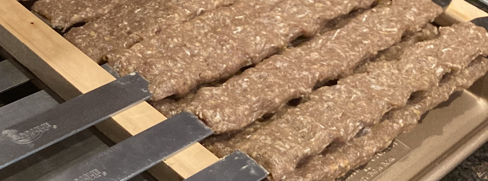

Ingredients |
 |
|---|---|
|
- ½ cup teriyaki sauce
- ½ cup honey - ½ teaspoon garlic powder - ½ pinch ground ginger - 1 ½ pounds skinless, boneless chicken breast halves - cut into cubes - 1 pound beef sirloin, cut into 1 inch cubes - 2 red bell peppers, cut into 2 inch pieces - 1 large sweet onion, peeled and cut into wedges - 1 ½ cups whole fresh mushrooms - skewers |
Maria Anders |